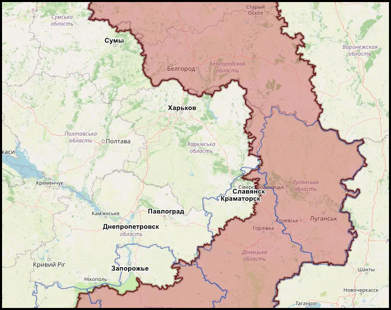
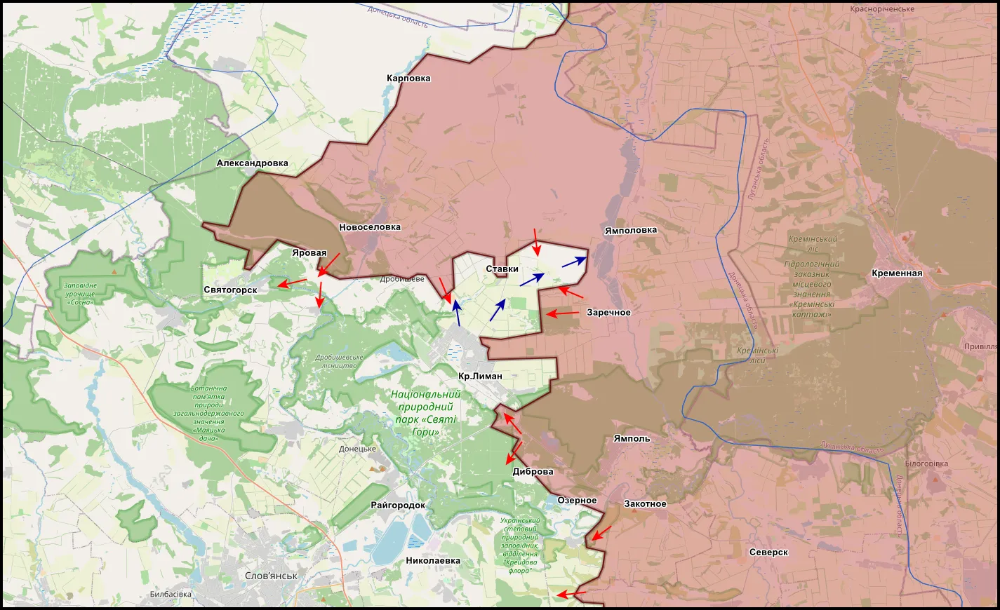
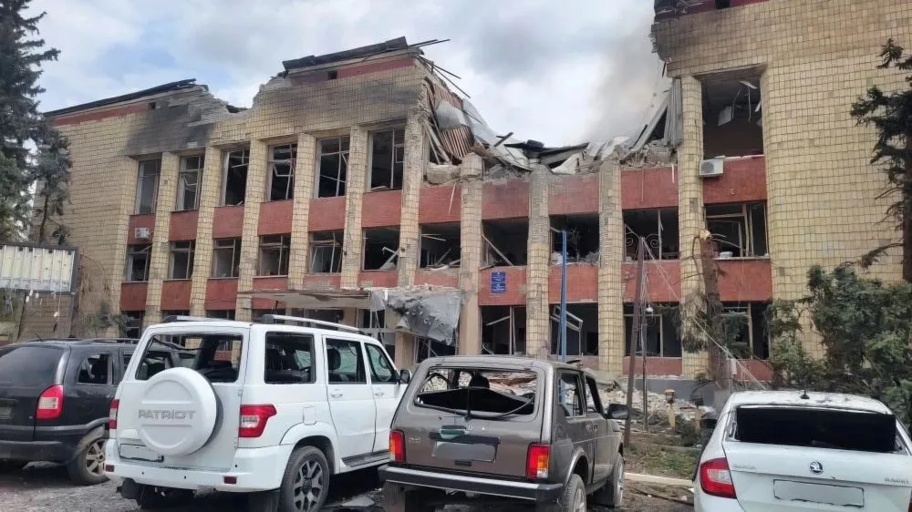

Что изменилось на фронте СВО к 6 мая 2026 года
Дата:
Формат: аналитический обзор по открытым источникам и ранее опубликованным материалам KRM РФ

Главный вывод: к 6 мая 2026 года фронт СВО меняется не через один крупный прорыв, а через постепенное накопление локальных изменений. На первый план выходят не только населенные пункты, но и дороги, переправы, лесополосы, промышленные зоны, пункты управления БПЛА, маршруты снабжения и способность сторон удерживать отдельные узлы обороны.
Этот материал продолжает предыдущий обзор "Что изменилось на фронте СВО к 24 апреля 2026 года" и связан с еженедельными оценками KRM РФ за 20-26 апреля и 27 апреля - 3 мая 2026 года. Его задача - не пересказать все сводки подряд, а зафиксировать более устойчивую тенденцию: фронт становится системой отдельных очагов контроля, серых зон и логистических узлов.
Материал подготовлен в рамках подхода, описанного в разделе "Методология". В оценке учитываются открытые сообщения, данные OSINT, публикации сторон конфликта, ранее опубликованные материалы KRM РФ и сопоставление динамики по нескольким направлениям. Выводы не являются официальной картой или окончательным статусом контроля населенных пунктов.
Коротко: что изменилось после 24 апреля
- Фронт остался позиционным. Быстрого оперативного обвала не зафиксировано, но продвижения на ряде участков продолжаются малыми группами.
- Давление стало шире. Купянское, Краснолиманское, Славянское, Константиновское, Покровское и Запорожское направления всё чаще рассматриваются не изолированно, а как части общей нагрузки на оборону ВСУ.
- Выросло значение логистики. Дороги, переправы, узлы снабжения, железнодорожные объекты и подходы к ним стали важнее формального продвижения на карте.
- БПЛА окончательно стали системным фактором. Дроны влияют на разведку, штурмы, ротации, снабжение, удары по тылу и возможность закрепления.
- Серые зоны стали нормой. На многих участках контроль определяется не сплошной линией фронта, а отдельными позициями, посадками, зданиями, промышленными объектами и временными опорными точками.
Как читать текущую обстановку
Главная ошибка при оценке нынешнего этапа войны - ждать одного большого события, которое сразу объяснит всю картину. На практике фронт меняется иначе. Сначала ухудшается снабжение, затем усиливается давление на соседние позиции, появляются серые зоны, отдельные группы закрепляются в спорных районах, после чего карта постепенно подстраивается под уже изменившуюся реальность.
Поэтому отдельные населенные пункты важно рассматривать не только как точки на карте. Рай-Александровка, Купянск-Узловой, Куриловка, Ильиновка, Гришино, Верхняя Терса, Старый Караван или Озерное важны прежде всего как элементы более широкой системы: дорог, высот, переправ, промышленных зон, лесополос и маршрутов снабжения.
Именно это делает материал "долгоиграющим". Даже если статус отдельного населенного пункта изменится, сама логика останется прежней: фронт всё больше зависит от связности обороны, качества логистики, плотности БПЛА и способности сторон закрепляться в малых тактических точках.

Красный Лиман, Славянск и Северск: северная дуга давления
Краснолиманско-Славянский участок остается одним из ключевых для понимания всей восточной части фронта. Здесь совпадают сразу несколько факторов: лесистая местность, долина Северского Донца, транспортные узлы, серые зоны, сложная линия контакта и высокая роль малых групп. Подробнее географическая основа этого района разобрана в материале "География восточного участка фронта СВО".
После 24 апреля давление продолжало накапливаться в районах Озерного, Старого Каравана, Дробышево, Кривой Луки, Калеников и Рай-Александровки. Здесь трудно говорить о простой и ровной линии фронта. На одном участке может фиксироваться продвижение, рядом сохраняется серая зона, а дальше продолжают действовать отдельные украинские группы.
На Краснолиманском направлении особое значение имеют не только сами населенные пункты, но и возможность снабжения, ротации и удержания опорных точек в лесистой местности. С наступлением "зеленки" возрастает роль маскировки, скрытого движения, малых штурмовых групп и инфильтрации между позициями.
На Славянском направлении внимание смещается к Рай-Александровке, Николаевке и коммуникациям, связанным со Славянско-Краматорской агломерацией. Пока это не означает быстрого выхода к Славянску, но показывает постепенный переход боевых действий к более глубокой системе обороны ВСУ.
Этот участок важно оценивать не по одному маркеру, а по совокупности признаков: появление новых геопривязок, изменение серых зон, удары по логистике, состояние переправ, активность БПЛА и способность сторон удерживать позиции после первичного захода.
Купянск и левобережный участок: борьба за связность обороны
Купянское направление постепенно перестало быть только городской темой. Если раньше внимание концентрировалось на боях в самом Купянске, то теперь всё большее значение имеют Куриловка, Ковшаровка, Новоосиново, Песчаное, Петропавловка и Купянск-Узловой.
Причина проста: Купянск связан с Осколом, переправами, левобережными населенными пунктами и железнодорожной логистикой. В материале "География восточного участка фронта СВО" уже разбиралось, почему Оскол, пойма, высоты и Купянск-Узловой формируют отдельную систему, а не просто набор точек на карте.
Продвижение в районе Купянска-Узлового, Куриловки, Ковшаровки и соседних участков важно не только само по себе. Оно влияет на устойчивость всей обороны вокруг города. Если давление на левобережные коммуникации усиливается, ВСУ приходится удерживать не только городские позиции, но и всю систему подвоза, ротации, отхода и переброски резервов.
При этом Купянское направление остается сложным для быстрых выводов. ВСУ активно используют БПЛА, артиллерию, мобильные группы и удары по логистике. Поэтому корректнее говорить не о скором падении Купянского узла, а о постепенном переходе от локальных городских боев к более широкому давлению на транспортную и оборонительную систему района.
Отдельно важны оценки украинской стороны. В материале "Что пишет противник о ситуации на Купянском, Краснолиманском и Славянском направлениях" уже отмечалось, что даже в украинской подаче эти участки выглядят напряженными, а давление ВС РФ признается как системный фактор, хотя и описывается как контролируемый процесс.
Константиновка: южный фас агломерации
Константиновское направление важно не только как отдельный городской участок. Оно связано с более широкой оборонительной системой Краматорско-Славянской агломерации. Поэтому изменения южнее и юго-восточнее Константиновки могут иметь значение для всей конфигурации обороны на севере Донбасса.
В последние недели в сводках и оценках чаще проходили Бересток, Ильиновка, Долгая Балка, Новодмитровка, промышленные зоны, дороги снабжения и позиции операторов БПЛА. Даже ограниченное продвижение на таких участках может создавать нагрузку не только в одной точке, но и на соседних рубежах.
Здесь особенно важно отделять присутствие от устойчивого контроля. Заход штурмовых групп, временное закрепление, работа в серой зоне или занятие отдельных строений еще не означают полного контроля населенного пункта. Для вывода нужны повторные подтверждения, геопривязки, устойчивость позиций и признаки изменения логистики.
Ключевой вопрос по Константиновскому направлению - не "когда город будет взят", а сможет ли давление южнее города перейти в устойчивое нарушение связности обороны ВСУ на более широком участке.
Покровское направление: накопление малых результатов
Покровский участок остается зоной постепенного давления без быстрого оперативного развития. Его значение в том, что здесь хорошо видна логика нынешнего этапа войны: борьба за посадки, шахтные позиции, терриконы, дороги, отдельные опорные пункты и устойчивость снабжения.
После боев за Гришино и соседние участки давление продолжалось в районах Новоалександровки, шахтных объектов и промышленных зон. FPV-дроны играют здесь ключевую роль и при попытках движения техники, и при удержании уже занятых позиций.
На отдельных участках ВСУ сохраняют способность стабилизировать линию, проводить контратаки и удерживать важные точки. Но такая стабилизация требует резервов, дронов, подвоза и постоянной работы по закрытию локальных кризисов. Поэтому даже без резкого изменения карты нагрузка на оборону может постепенно расти.
Запорожское и Гуляйпольское направления: подвижный южный участок
Южные направления отличаются от северных участков большей подвижностью и меньшей однозначностью. В районах Бойково, Мирного, Цветкового, Верхней Терсы и соседних точек отдельные продвижения могут быстро сменяться контратаками, а статус контроля требует постоянного уточнения.
На Запорожском и Гуляйпольском направлениях особенно заметна зависимость фронта от БПЛА, разведки, связи и способности удерживать малые позиции. Здесь контроль над отдельной посадкой, высотой или окраиной может иметь значение только в том случае, если за ним следует устойчивое закрепление.
Значение Гуляйпольского участка постепенно растет не потому, что там обязательно должен произойти быстрый прорыв, а потому что активность на юге заставляет ВСУ учитывать угрозу расширения фронта и распределять внимание между несколькими направлениями одновременно.

БПЛА и логистика: главный фактор текущего этапа
Главная особенность текущего этапа - БПЛА стали не отдельным инструментом, а средой, в которой ведутся боевые действия. FPV-дроны, агродроны, разведывательные аппараты, удары по пунктам управления, охота за транспортом и постоянное наблюдение определяют темп почти на всех направлениях.
Это меняет саму механику фронта. Крупная колонна, ротация, подвоз боеприпасов или перемещение техники быстрее обнаруживаются и становятся целью. Поэтому обе стороны всё чаще опираются на малые группы, скрытое движение, ночные перемещения, рассредоточение и постепенное просачивание между опорными пунктами.
На Лиманском направлении это проявляется через лесистую местность и инфильтрацию, под Купянском - через высокую насыщенность БПЛА и удары по логистике, на Покровском участке - через FPV-удары по технике, на Константиновском - через борьбу за пункты управления дронами и наблюдение в городской среде.
Отдельное направление - удары БПЛА по тыловым и прифронтовым районам. Для ЛНР эта тема уже стала не только фронтовой, но и гражданской. Подробнее изменение обстановки в городе разобрано в материале "Кременная под дронами: как изменилась жизнь в городе".
Что изменилось по сути
К 6 мая 2026 года ключевая тенденция выглядит так: ВС РФ сохраняют инициативу на ряде направлений, но эта инициатива выражается не в одном резком прорыве, а в последовательном давлении на узлы обороны, логистику, серые зоны и способность ВСУ закрывать локальные кризисы.
Оборона ВСУ сохраняет способность к сопротивлению. Это важная оговорка. На ряде участков противник удерживает позиции, проводит контратаки, активно применяет БПЛА и стабилизирует линию за счет резервов. Поэтому говорить о быстром полном обвале фронта некорректно.
Но одновременно всё заметнее другая тенденция: устойчивость обороны всё чаще зависит не от одной сплошной линии, а от множества отдельных элементов. Если нарушается дорога, теряется опорный пункт, срывается ротация, подавляется пункт управления БПЛА или расширяется серая зона, это не всегда сразу видно на большой карте. Но именно такие изменения постепенно меняют конфигурацию фронта.
Главное: Рай-Александровка, Купянск-Узловой, Куриловка, Ильиновка, Гришино, Верхняя Терса, Озерное, Старый Караван и соседние участки важны не как отдельные названия, а как маркеры одного процесса - проверки устойчивости оборонительной системы ВСУ на нескольких направлениях одновременно.
Что мониторить дальше
- Купянск-Узловой, Куриловка и Ковшаровка. Главный вопрос - будет ли давление превращаться в устойчивое нарушение левобережной логистики.
- Озерное, Диброва, Ставки и Старый Караван. Здесь важно отслеживать не только заявления, но и геопривязки, закрепление и изменение серых зон.
- Рай-Александровка и Николаевка. Эти точки важны как возможные маркеры давления на северную дугу Славянско-Краматорской агломерации.
- Ильиновка, Бересток, Долгая Балка и Новодмитровка. На Константиновском направлении нужно отделять присутствие штурмовых групп от устойчивого контроля.
- Гришино, терриконы и шахтные позиции. На Покровском участке значение имеют не только продвижения, но и способность удерживать позиции под постоянными ударами FPV.
- Верхняя Терса, Мирное, Цветковое и Бойково. На юге нужно проверять устойчивость каждого изменения, потому что отдельные позиции могут переходить из рук в руки.
- Плотность БПЛА. Рост ударов по логистике, пунктам управления, складам, ротациям и гражданской инфраструктуре остается одним из главных индикаторов следующего этапа.
Подтверждено / Вероятно / Требует подтверждения
Подтверждено
- Фронт сохраняет позиционный характер: крупного оперативного обвала к 6 мая не зафиксировано.
- Продвижение на большинстве активных участков идет малыми группами, через серые зоны, посадки, промышленные объекты, городскую застройку и отдельные опорные точки.
- Роль БПЛА продолжает расти: дроны влияют на разведку, поражение техники, логистику, ротации, снабжение и удары по тыловым районам.
- Купянское, Краснолиманское, Славянское и Константиновское направления связаны общей логикой: дороги, переправы, высоты, лесные массивы, железнодорожные узлы и пункты снабжения важны не меньше, чем сами населенные пункты.
- Оборона ВСУ сохраняет способность к сопротивлению, контратакам и стабилизации отдельных участков, поэтому резкие выводы о полном обрушении фронта преждевременны.
Вероятно
- Давление ВС РФ на нескольких направлениях постепенно увеличивает нагрузку на украинскую оборонительную систему.
- Купянский участок переходит от локальных городских боев к более широкому давлению на транспортные связи, левобережную логистику и Купянск-Узловой.
- Краснолиманско-Славянская линия всё больше приобретает характер единой зоны давления, где значение имеют не только населенные пункты, но и промежуточные рубежи, леса, переправы и дороги.
- Константиновское направление может получить большее значение, если давление южнее города начнет влиять на устойчивость всей агломерационной обороны.
- Запорожское и Гуляйпольское направления могут использоваться для расширения нагрузки на резервы ВСУ даже без немедленного глубокого продвижения.
Требует подтверждения
- Точный статус контроля в районах Старого Каравана, Дибровы, Ставков, Рай-Александровки, Ильиновки, Долгой Балки, Гришино, Верхней Терсы и отдельных участков Купянска-Узлового.
- Глубина и устойчивость закрепления ВС РФ на спорных участках, где присутствие штурмовых групп может не означать полного контроля.
- Масштаб истощения украинских резервов на каждом отдельном направлении.
- Способность ВСУ стабилизировать локальные кризисы без ухудшения положения на соседних участках.
- Переход от серии тактических продвижений к более крупному оперативному изменению обстановки.
Итог
К 6 мая 2026 года фронт СВО не перешел в фазу быстрого обвала, но и не остался в прежнем состоянии. Его конфигурация постепенно меняется через накопление малых результатов, давление на логистику, расширение серых зон, рост роли БПЛА и борьбу за устойчивость отдельных узлов обороны.
Для дальнейшей оценки важнее всего следить не за громкими заявлениями, а за повторяемыми признаками: геопривязками, закреплением, изменением маршрутов снабжения, появлением новых серых зон, ударами по пунктам управления БПЛА и способностью сторон удерживать позиции после первичного продвижения.
Если текущая динамика сохранится, следующий этап может быть связан не с одним крупным прорывом, а с серией локальных кризисов на нескольких направлениях одновременно. Именно это и является главным риском для устойчивости оборонительной системы ВСУ на восточном и южном участках фронта.